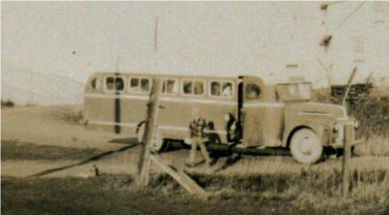

The Family Chronicle
No. 66 April 10, 2004
________________
Miramichi Fire Song
I
am grateful to Donald Edge for The
Miramichi Fire Song
which was collected from Jean MacDonald in 1953 by Dr. Helen
Creighton in Maritime
Folksongs
It
is the truth what I now tell you
For my eyes did partly
see
What did happen to the people
On the banks of the
Miramichi;
What did happen to the people
On the banks of
the Miramichi.
On the seventeenth evening of
October
Eighteen hundred and twenty-five
Thousands of
people fell by fire
Scorched were those that did survive
Some
said it was the sins of the people
And their sins rolled
mountains high;
Which did ascend up to Jehovah
He would
see and justify.
In order to destroy our lumber
And
our country to distress
He sent the fire in a whirlwind
From
the howling wilderness.
First on the Nor' West was
discovered
Twenty-two there then did die,
After it had
swept o'er the meadows
To Newcastle it did fly.
While
the people were a-sleeping
Fire seized upon their town,
Fine
and handsome were their dwellings
Soon they tumbled to the
ground.
It
burned three ships that were a-building
And two more at anchor
lay,
Many that had seen the fire
Thought it was the
judgement day.
Twelve more men were burned by the fire
In
the compass of that town,
Twenty-five more on the water
In
a scow upset and drowned.
A family below Newcastle
Were
destroyed among the rest,
Father, Mother and three
children,
One an infant at the breast.
Thirteen
families were residing
Just out back of Gretna Green,
All
of them were burnt by the fire,
Only one alive was seen.
Then
it passed to Black River,
Wher it did burn sixty more
So
it forced it's way with fury
Till it reached the briny
shore.
Forty-two miles by one-hundred
This great
fire did extend;
All was done within eight hours
Not
exceeding over ten,
As I have spoke of things
collective
Now I intend to personate
And speak of some of
my aqquaintence
Of whom I was intimate.
A lady was
drove to the water,
Wher she stood both wet and
cold,
Notwhithstanding her late illnes,
She had a babe but
three days old.
Six young men, both smart and
active,
Were to work on the Nor' West,
When they saw the
fire coming,
To escape it tried their best.
About
two miles from where their camp stood
They were found each one
of them
But to paint their sad appearance
I cannot do with
pen.
To see these fine, these blooming youngmen
All
lay dead upon the ground
And their brothers standing
mourning
Spread a dismal scene around.
Then we dug a
grave and buried
Those whom the fire did burn
Then each of
us that are living
To our dwellings did return.
I
heard the sighs, the cries and groaning
Saw the falling of the
tears
By me this will not be forgotten
Should I live a
hundred years.
Sisters weeping for their brothers,
Father
crying for his son,
And with bitter, heartfelt sorrow,
Said
the Mother, "I'm undone!"
It killed the wild
beasts in the forests
In the rivers many fish
Such another
horrid fire
See again I do not wish.
The
poem was written, I believe, by John Jardine. Can any reader tell
us more about the author? The year? Whether the fire swept through
“our” Black River? If so, who were the people who were killed?
I would like to publish photos of the early school busses. As I recall, the original was a dark blue bus built for and operated by the MacK and George Godfrey. Was the body built locally? Perhaps the inside was built by Edgar and Bill Fowlie? The next was a commercially available bus – blue and silver. (I still remember getting into that bus on the first morning.) Then Tom Adams had the contract and his buses were green with yellow trim. (See photo.). If anyone has photos, I would be delighted to include them in an up coming issue.

Photo of Adams’ School bus taken at gate to Little Branch School
If one missed the school bus, one ended up walking the three miles to the Miramichi Rural High School (No longer exists.) Once I missed the bus and, naturally, was late for class. Just inside the door, I met the School Principal, Mr. Perley Quayle. I quipped, “Better late than never”. He responded , “Yes, but better never late”
The Chronicle is an occasional newsletter published by Don Glendenning It is designed to share information about my family, community and the times in which I grew up. While every effort is made to be accurate, errors are likely to occur. Comments, enquiries and information may be sent to 62 Queen Elizabeth Drive, Charlottetown, PEI, C1A 3A9. Tel: 902-892-5859 Email: don@glendenning.net Web: www.glendenning.net